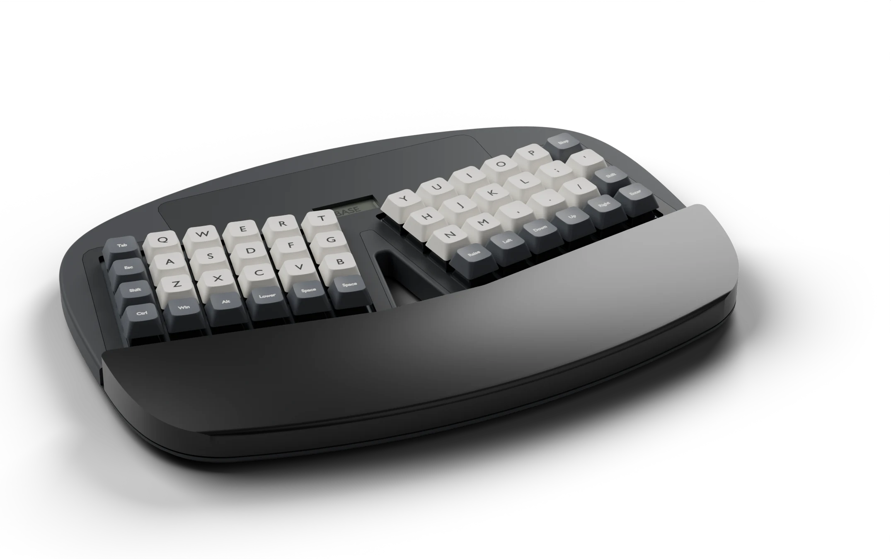
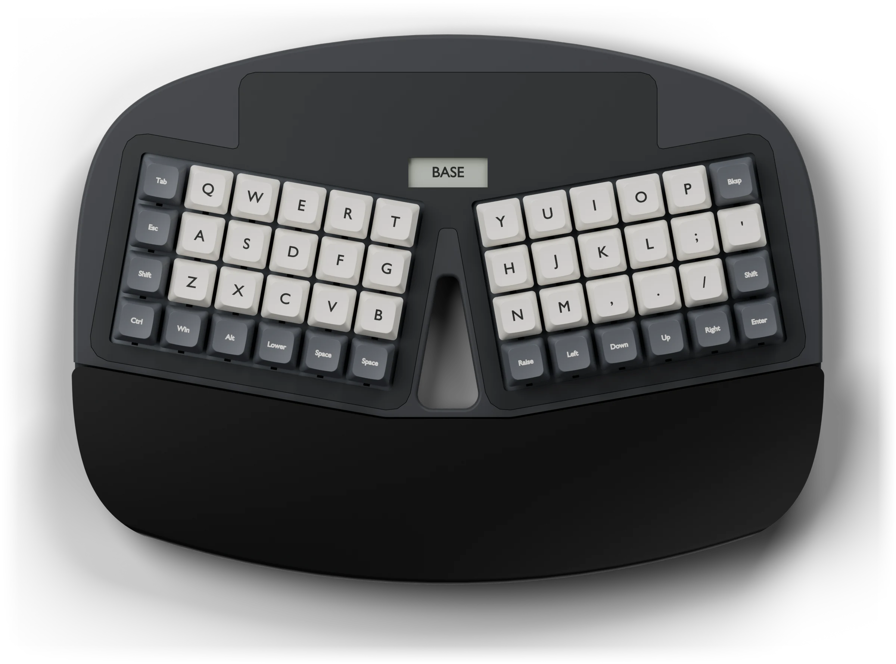
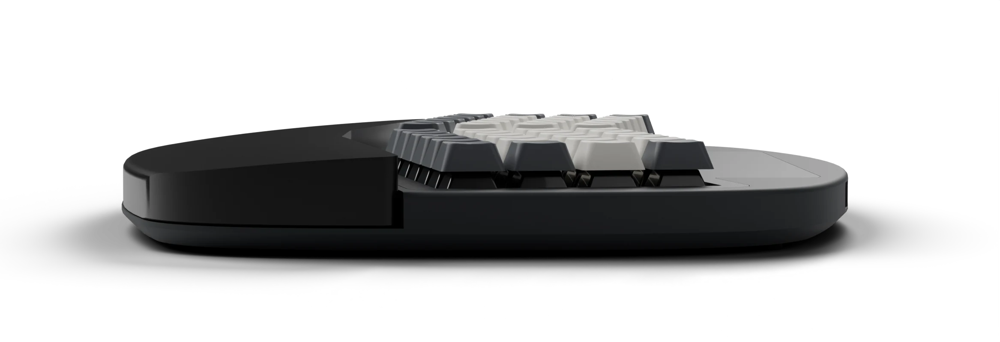
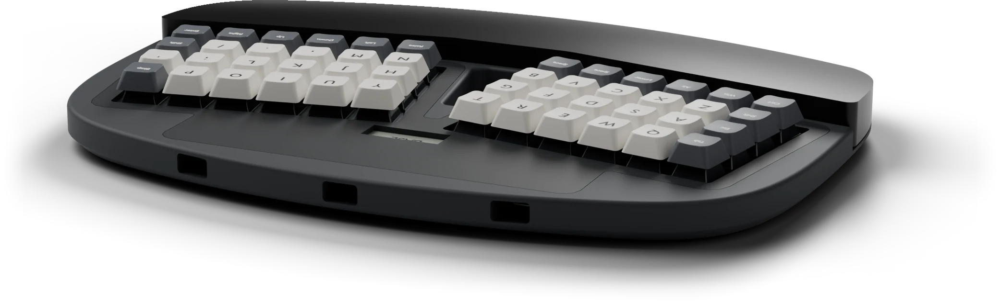
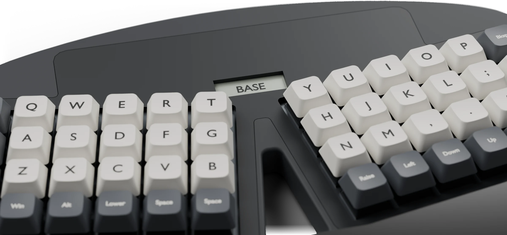
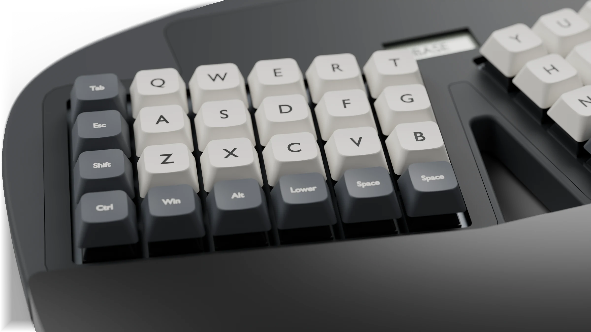
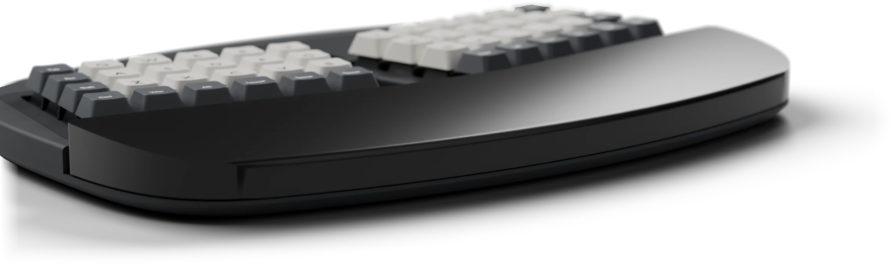
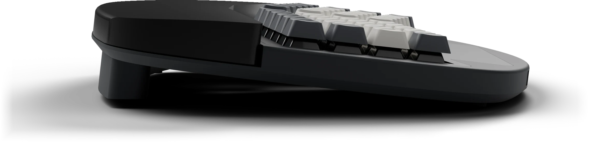
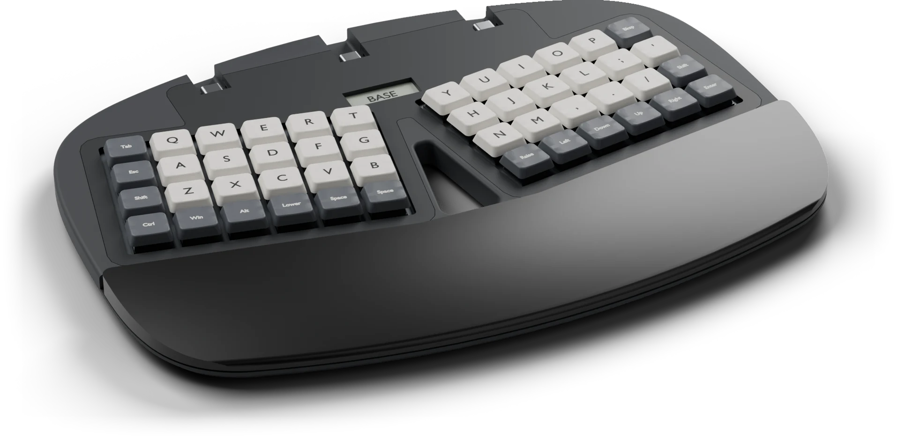
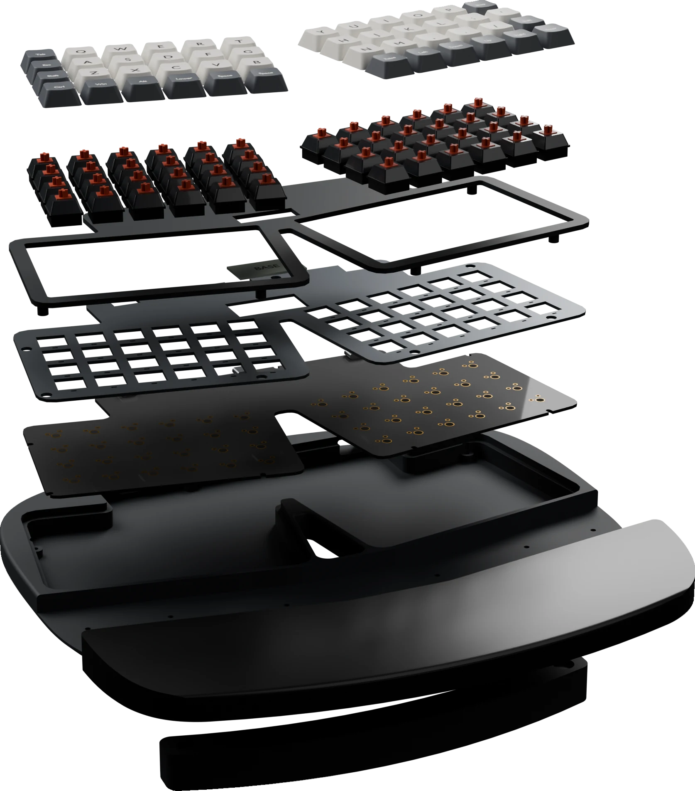

Revision A0, engineering preview
worxboard ergo
A split Planck in one curved shell.
Print the case What works today

Every picture on this page is a render of the design. No keyboard has been built yet.
Forty-eight keys. Nothing to reach for.
10°
Splay
Each well turns out ten degrees, so the valley opens toward your wrists.
67 mm
Palm rest
One rest crosses the whole front and falls 6 mm toward you.
−6.7°
Negative tilt
The case sits flat. A magnetic riser lifts the front edge when you want it.
3 × USB-C
One cable, three places
Left, center, or right. One host at a time. This is not a hub.
160 × 68
Memory LCD
A small display between the wells names the active layer.
1u
Every key
Forty-eight identical keycaps. No stabilizers to tune.
Shaped like the boards your wrists remember.
The outline is drawn from tangent arcs, with no straight edge anywhere. The form follows the ergonomic boards of the 2010s. The layout stays a Planck.

One shell
303 mm wide and 223 mm deep. The MX case body is 15.5 mm tall. A flush top cover frames both wells and the display.
An open valley
A slot runs through the case between the wells. It is wider at the wrists than at the display.
Flat, on purpose
Both wells sit on one rigid board, so the keys do not tent. Tenting needs two boards. This revision does not have them.





Three layers on four rows.
Numbers and function keys live on Lower. Raise holds the two maintenance keys. Pick a layer to see what changes.
Full height or low profile.
Both use the same key map and the same firmware. They do not share a plate or a PCB, so choose one before you print.
Cherry MX
- Sockets
- Kailh MX hot-swap
- Plate
- 1.5 mm, 14.0 mm openings
- Case height
- 15.5 mm

Kailh Choc v1
- Sockets
- Kailh Choc v1 hot-swap
- Plate
- 1.2 mm, 13.8 mm openings
- Case height
- 12.7 mm
Print it yourself.
Every case part ships as STL, 3MF, and STEP, whole or split in two. The meshes are watertight. No slicer profile has been proven, so start with the small test pieces.

Choose a switch family
MX and Choc v1 parts do not mix.
Check your bed
The one-piece chassis needs a 350 mm class bed. The split halves fit about 235 mm.
Print four test pieces
One switch opening, the center tab, one USB tunnel, and one screw boss.
Print the case
Chassis, plate, top cover, and palm rest. The riser is optional.
Screw it together
Fourteen M2.5 screws, all from the underside.
What works today.
Revision A0 is a design you can inspect and a case you can print. It is not a keyboard you can order.
Checked
- Twenty-six case parts are valid solids with watertight meshes.
- The case clears the board, switches, keycap travel, USB plugs, and display in the model.
- FreeCAD saves and reopens both variants with matching volumes.
- The firmware compiles for this key grid.
Not done
- The PCB has no copper tracks. Do not order it.
- The PCB places the USB jacks facing the wrong way.
- Nothing has been printed, measured, or assembled.
- The firmware has never run on a board.
Tech specs
- Layout
- 48 ortholinear keys, two blocks of 4 × 6, all 1u
- Shell
- 303.03 × 223.00 mm. 15.5 mm tall for MX, 12.7 mm for Choc v1
- Palm rest
- 58 to 68 mm deep, 2.5 mm below the keycap tops at its rear edge
- Stance
- Flat on four pads, or 6.7° of negative tilt on the magnetic riser
- Switches
- Cherry MX compatible or Kailh Choc v1, hot-swap
- Controller
- RP2040 with 16 MiB flash
- Connection
- Wired USB-C. No battery, no radio
- Display
- 160 × 68 memory LCD behind a 32 × 12 mm window
- Firmware
- ZMK, pinned revision, with Base, Lower, and Raise layers
- Fasteners
- Fourteen M2.5 screws from the underside
- License
- GPL-3.0-or-later